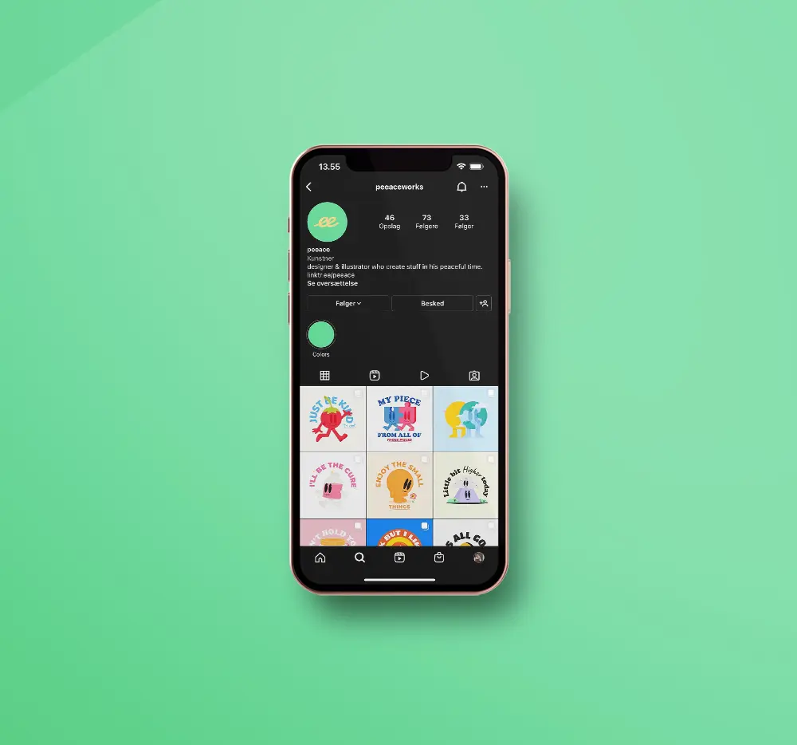
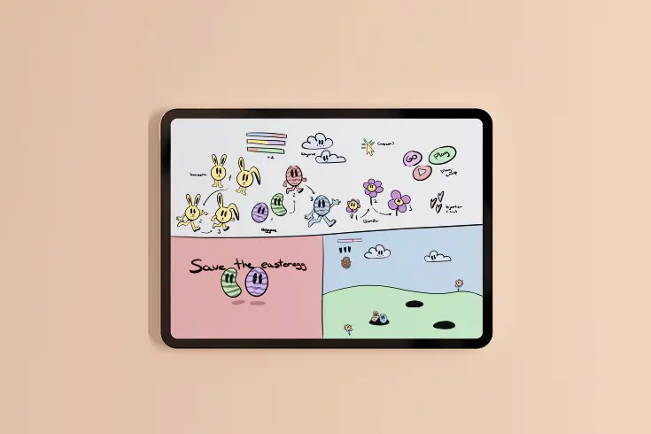

Hvor har jeg fundet inspiration?
Designer & illustrator Peeace
På dette tema skulle vi vælge en stil vi skulle basere vores spil på. Jeg valgte en artist jeg fandt på Instagram/Dribbble, som hedder Peeace. Han laver en del fine og retro designs med gode kontrastfarver og et budskab. Jeg synes det passede rigtig fint, til den vibe jeg gerne ville bruge.
Skitser & start-fasen
Tegnet i ProCreate på iPad
Det hele startede således ud, og derefter blev det konveret direkte til Illustrator, hvor jeg så rentegnede alle elementerne, som skulle bruges i spillet.
